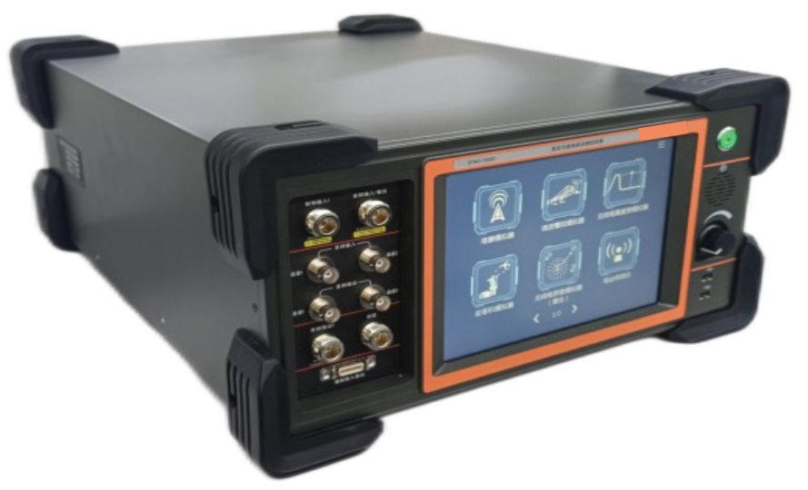

STAR-1000D
Synthesis Tester for Avionics Radio
The STAR-1000D is a compact bench tester for avionics communication, navigation, and surveillance (CNS) systems.
Supports functional and performance testing with integrated RF signal generation and measurement.
Software-defined architecture integrating multiple instruments and simulators into one platform.
Graphical interface, suitable for MRO, production, R&D, and field testing.
CNS Testing Capability
Supports communication, navigation, and surveillance systems for comprehensive bench and field testing.
